| A1 | 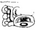 | Distance Number: 1 K'atun |
| B1 | 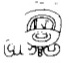 | Distance Number: 11 T'un |
| A2 | 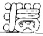 | Distance Number: 12 Winal, 8 K'ins |
| B2 | u-ti-ya "it had happened" | |
| C1 | 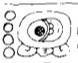 | Tzolk'in: 4 Muluk |
| D1 | i u-ti "and then it happened" | |
| C2 | Tzolk'in: 11 K'aban | |
| D2 | 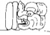 | Haab: 10 Sotz |
| E1 | hu-bi-hi "were thrown down" | |
| F1 | u to-k'a "his flint" | |
| E2 | u pa-ka-la "his shield" | |
| F2 | 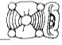 | Nu-na |
| G1 | 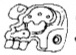 | Ujol |
| H1 | 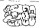 | Ch'aak-ki |
| G2 | 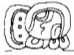 | u K'AB-hi "he caused it to be done" |
| H2 | B'a-la-ha | |
| I1 | 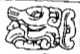 | CH'AN-na |
| J1 | 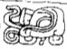 | K'AWIIL-la |
| I2 | u chan-nu"captor of" | |
| J2 | 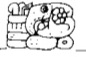 | Tah Mo' "Torch Macaw" |
| K1 | 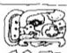 | u B'AH-hi "impersonator of?" |
| L1 | Ek' ??? | |
| K2 | 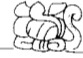 | ??? |
| L2 | 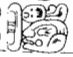 | ???? |
| M1 | 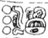 | 3 K'atun |
| N1 | 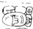 | ahaw |
| M2 | B'a-te "warrior" | |
| N2 | pi-tzi-la "ballplayer" |